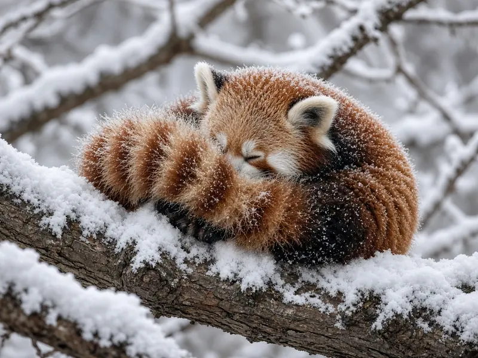

How do red pandas stay warm?
Red pandas stay warm with a coat built for mountain forests: dense fur over the whole body, fur covering the soles of their feet and a long bushy tail they use against cold and wind. They also curl into a tight ball to save heat, and in deep cold they can slip into short spells of dormancy. Metabolism studies add a twist: in winter, red pandas actually burn more energy at rest, not less.

Curious when they are awake? See are red pandas nocturnal?
A coat made for cold canopy forests
Red pandas live in temperate bamboo forests in the Himalaya and the mountains of southwest China, where winters bring snow and freezing nights. For an animal that weighs only about 3.6 to 7.7 kilograms, keeping warm is a real challenge, because small bodies lose heat quickly. See our red panda profile and panda habitat guide for where they live.
The Smithsonian's National Zoo describes the main equipment. Dense fur completely covers the feet, which helps on icy branches and snowy ground. The long, ringed tail helps with balance in the trees and also protects the animal from harsh cold and winds. Cubs are born fully furred, a sign that the cold starts mattering from the first day.
Curling up, stretching out
Behaviour does a lot of the work. In cold weather, red pandas curl into a tight ball, which reduces the surface exposed to the air and conserves body heat and energy. When it is warm, they do the opposite: they stretch out along branches and pant to shed heat. These everyday postures are why a sleeping red panda so often looks like a round bundle of fur with a tail wrapped over its face.
In significantly cold temperatures, red pandas can become dormant, lowering their metabolic rate and raising it every few hours as they wake to look for food. That is not true hibernation. Like giant pandas, red pandas eat mostly bamboo, which is too poor in energy to build the fat reserves long hibernation would need; read more in do pandas hibernate?.
What the metabolism studies found
Bamboo is a hard diet for a carnivore's gut, so scientists long expected red pandas to run on a low budget. In 1988, Brian McNab published a study in Physiological Zoology on energy conservation in a tree kangaroo and the red panda. His measurements came from two zoo red pandas and suggested a low metabolic rate, which fitted the idea of an animal saving energy on a poor diet.
A larger study in 2017 changed that picture. Fei, Hou, Spotila, Paladino, Qi and Zhang measured resting metabolic rate in 17 red pandas at a giant panda breeding base in China, under more natural conditions and with more accurate instruments. Writing in PLOS ONE, they reported an average of 0.290 ml of oxygen per gram per hour in summer (range 0.204 to 0.342) and 0.361 in winter (range 0.331 to 0.406). The seasonal difference was statistically significant.
The explanation is temperature. Summer test temperatures were probably within the red panda's thermal neutral zone, the band in which an animal needs no extra effort to hold its body temperature. Winter temperatures fell below it, so the animals had to produce more heat. The team found no difference between males and females and no effect of body mass.
The biggest surprise was the overall level. Contrary to the authors' own expectations for a bamboo eater, red panda metabolic rates were similar to those of other mammals of the same body size, and much higher than McNab's earlier zoo figures. The authors attribute the gap to their larger sample, more natural conditions and better equipment. They concluded that, at these rates, red pandas would not be limited by food supply in natural reserves.
How this compares with giant pandas
Giant pandas tell a different energy story. A 2015 paper in Science by Nie and colleagues reported exceptionally low daily energy expenditure in giant pandas, which helps a large bear survive on bamboo. Red pandas share the same food and some of the same forests, but the 2017 data suggest they meet the challenge more through fur, posture and short dormancy than through a permanently slow metabolism. For more on what both species eat, see our panda diet guide.
Why this matters for conservation
Knowing how much energy an animal needs helps planners judge whether a forest can support it. Fei and colleagues framed their work around reintroduction and reserve management for a species that the IUCN Red List classes as Endangered. Warm fur only helps if the bamboo, canopy and dens are still there, which is why habitat loss matters so much; GPS work on how far red pandas roam is covered in how big is a red panda's home range?.
Frequently asked questions
How do red pandas keep warm in winter?
They rely on dense fur that even covers the soles of their feet, a long bushy tail that shields them from cold and wind, and behaviour such as curling into a tight ball. In very cold weather they can become dormant, lowering their metabolic rate and raising it every few hours to look for food (Smithsonian's National Zoo).
Do red pandas have a slow metabolism?
Not as slow as once thought. A study of 17 red pandas at a giant panda breeding base in China found resting metabolic rates similar to other mammals of the same body size, and higher than earlier measurements from two zoo animals (Fei et al. 2017, PLOS ONE).
Do red pandas burn more energy in winter?
Yes. Fei and colleagues measured an average resting metabolic rate of 0.290 ml of oxygen per gram per hour in summer and 0.361 in winter, a significant seasonal difference. Winter test temperatures were below the thermal neutral zone, so the animals had to make extra heat.
Do red pandas hibernate?
No. Red pandas do not hibernate. In severe cold they can drop into short periods of dormancy and lowered metabolism, then wake every few hours to feed.
How do red pandas cool down when it is warm?
They stretch out along branches and pant to shed heat, according to the Smithsonian's National Zoo.
Sources
- Fei, Y., Hou, R., Spotila, J. R., Paladino, F. V., Qi, D. and Zhang, Z. (2017), Metabolic rate of the red panda, Ailurus fulgens, a dietary bamboo specialist, PLOS ONE 12(3): e0173274. DOI 10.1371/journal.pone.0173274
- McNab, B. K. (1988), Energy conservation in a tree kangaroo (Dendrolagus matschiei) and the red panda (Ailurus fulgens), Physiological Zoology 61(3): 280 to 292. DOI 10.1086/physzool.61.3.30161241
- Smithsonian's National Zoo and Conservation Biology Institute: Red panda
- Nie et al. (2015), Exceptionally low daily energy expenditure in the bamboo eating giant panda, Science
- IUCN Red List: Red panda, Ailurus fulgens (2015 assessment)
Cite this page
APA
PandasWise. (2026, October 15). How do red pandas stay warm? https://pandaswise.com/blog/how-do-red-pandas-stay-warm.html
MLA
"How do red pandas stay warm?" PandasWise, 15 Oct. 2026, https://pandaswise.com/blog/how-do-red-pandas-stay-warm.html.
Chicago
PandasWise. "How do red pandas stay warm?" PandasWise. October 15, 2026. https://pandaswise.com/blog/how-do-red-pandas-stay-warm.html.